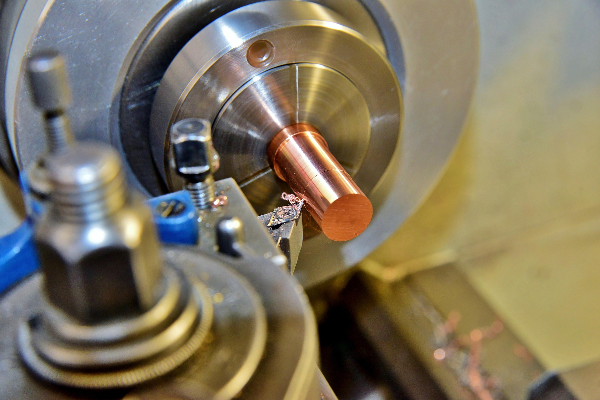

Bienvenido al proyecto de mecanizado.
En este proyecto vas a diseñar y fabricar una pieza en torno, aplicando los conocimientos trabajados en el módulo de fabricación por arranque de viruta.
A lo largo de este trabajo aprenderás a interpretar planos, seleccionar herramientas, planificar procesos y trabajar de forma segura en el taller.
